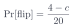

<!-- Slide 27: friends make a stone harder to sway.  See assets/flip-table.js. -->
<div class="l2-fig">
<svg id="flip-table-fig" viewBox="0 0 760 300" width="980"></svg>
</div>
<div class="slide-equation compact">
  
</div>
<script src="../assets/flip-table.js" defer></script>
